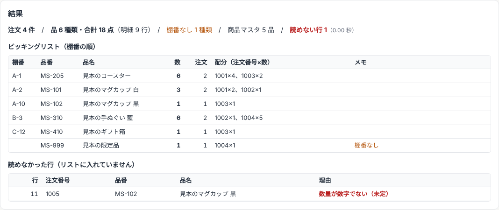

ピッキングリストと仕分け表
ネットショップの管理画面や受注ソフトから書き出した受注明細（注文番号・品番・品名・数量）から、出荷の作業に使う3種類の表を作って印刷するツールです。
- ピッキングリスト：品ごとに数を合計し、棚番の順に並べた集品用のリスト。棚を1回まわるだけで、まとめて取り出せます
- 仕分け表：注文ごとに、入れる品と数を棚番の順に並べた表（1注文1ページ、または詰めて印刷）
- 配分表：品ごとに「どの注文にいくつ」を並べた表。まとめて取り出した品を注文ごとの箱に配るときに使います
ソフトのインストールは不要で、いつものブラウザで動きます。
お試し版はすべての機能を使えて、受注明細と商品マスタはそれぞれ先頭15行までです。決済が終わると、そのまま製品版の画面に移動します。ブックマークしておけば何度でも使えます。

見本のデータ（架空の雑貨の注文）で作った例。注文・品名・人名は説明用のもので、実在の店・商品・人とは関係ありません。
こんなときに
- 注文を1件ずつ見ながら棚を何往復もしていて、同じ品を何度も取りに行っている
- 受注明細を Excel で並べ替えると、棚番が「A-1, A-10, A-11, A-2」の順になってしまう
- 受注明細には棚番がなく、商品の一覧（マスタ）と見比べて置き場所を書き込んでいる
- 注文が多い日は、20件ずつなどに分けて集品したい
できること
- 集品の合計：同じ品の数を全部の注文で合計し、何件の注文に入っているかも出します。品番のハイフン・空白の違い（「AB-12」と「AB12」）は同じ品とみなします（切り替え可）。品番のない行は品名でまとめます
- 棚番の順：「A-2」「A-10」「1-2-3」のような棚番を、番号の大きさの順に並べます（全角・半角の違いも吸収）。棚番のない品は最後にまとめ、「棚番なし」と出します
- 商品マスタから棚番を付ける：受注明細に棚番の列がないときは、品番と棚番の表を別に入れると、品番で棚番を付けます。同じ品が2か所の棚にあるときや、品名の違う行があるときはメモに出します
- まとまりに分ける：注文を「20件ずつ」のように分け、まとまりごとにピッキングリスト・仕分け表・配分表を作ります（印刷はまとまりごとに改ページ）
- 注文番号が1行目にだけある明細：注文番号・お届け先が空欄の行は、上の行と同じ注文とみなします（切り替え可）
- 読めない行：数量が空欄・0・数字でない行（「未定」など）は入れずに、行番号つきで一覧にします。「12個」「1,200」「３」のような書き方は数として読みます
- 印刷と保存：3種類とも A4 で印刷（確認欄、集品者・梱包者の記入欄つき）。Excel ファイル（.xlsx、ピッキングリスト・仕分け・配分の3シート）か CSV で保存できます。品番・注文番号は文字のまま保存し、先頭の0を消しません
- CSV（UTF-8・Shift_JIS）と Excel ファイル（.xlsx）を読めます。列は見出し（「注文番号」「受注番号」「商品コード」「SKU」「数量」「棚番」「ロケーション」「お届け先」など）から自動で選び、違っていたら画面で選び直せます。Excel の表をコピーして貼り付けても使えます
できないこと（購入前にご確認ください）
- ネットショップや受注ソフトとはつながりません。管理画面から受注明細を CSV・Excel で書き出して読み込んでください
- 在庫の引き当て・在庫数の確認はしません。取り出す数を並べるまでです
- 倉庫の通路の形に合わせた最短の歩く順は計算しません。棚番の番号の順に並べます
- バーコードの読み取り・印刷、送り状・納品書の作成はしません
- セット商品を中身の品に分ける機能はありません（中身の品を数えるなら 部品表の必要数と作れる数 をお使いください）
- スマートフォンでは操作しにくいため、パソコンでお使いください
Excel だけで作るなら
品ごとの合計は、Excel のピボットテーブルで出せます。受注明細を選んで「挿入」→「ピボットテーブル」を選び、「行」に棚番・品番・品名、「値」に数量（合計）を入れます。
受注明細に棚番がないときは、商品マスタを「マスタ」というシートに置き（A 列に品番、C 列に棚番）、受注明細の品番が C 列なら、空いている列に
=IFERROR(VLOOKUP(C2,マスタ!$A:$C,3,FALSE),"")
と入れて下までコピーすると、棚番の列ができます（マスタにない品は空欄）。
ただし、棚番は文字なので、Excel で並べ替えると「A-1, A-10, A-11, A-2」の順になります。番号の順にするには、棚番を「A-02」のように桁をそろえるか、並べ替え用の列を作る必要があります。このツールが向いているのは、棚番の番号の順で並べたい、品番の書き方が行によって違う、注文ごとの仕分け表や配分表も一緒に印刷したい、注文を何件かずつに分けたい、といったときです。
よくある質問
| データはどこかに送られますか？ | 送られません。読み込み・集計・印刷・保存はすべてお使いのブラウザの中で行います。表題などの一部の設定だけをブラウザに保存し、表の中身は保存しません。 |
|---|---|
| どのネットショップの CSV に対応していますか？ | 特定のサービス専用ではありません。1行に1品（注文番号・品番か品名・数量）の形の明細であれば使えます。列の見出しが違っても、画面で列を選べます。 |
| 注文番号の列がない表でも使えますか？ | 使えます。その場合は全部を1件の注文として、品ごとの合計（ピッキングリスト）だけを作ります。 |
| 何行まで使えますか？ | 製品版は行数の制限はありません（3万行で1秒以内に計算できることを確かめています）。画面の一覧は500品まで表示し、全部は印刷・保存に入ります。 |
安心してお使いいただくために
- 表はお使いのブラウザの中だけで処理し、サーバーには送信しません
- 動作環境：最新版の Chrome・Safari・Edge・Firefox（パソコン）
- 説明どおりに動かない場合は、ご購入から7日以内にご連絡いただければ返金します
届いた品を発注と突き合わせるなら 入荷の検品の照合、在庫から発注する品と数を出すなら 発注点チェックと発注書、書類に添える送付状は 送付状の一括作成 もあります。